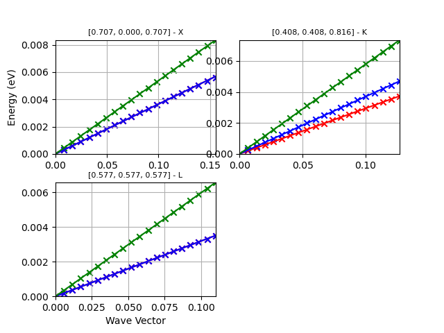

Note
Click here to download the full example code or to run this example in your browser via Binder
Speed of Sound¶
This example shows how to compute the speed of sound by fitting phonon frequencies along selected directions by linear least-squares fit. For a command line interface use:
abiview.py ddb_vs input_DDB
from __future__ import print_function
import os
import abipy.data as abidata
from abipy import abilab
from abipy.dfpt.vsound import SoundVelocity
# Initialize object from DDB file.
ddb_path = os.path.join(abidata.dirpath, "refs", "si_sound_vel", "Si_DDB")
sv = SoundVelocity.from_ddb(ddb_path)
# Get pandas dataframe with results.
df = sv.get_dataframe()
abilab.print_dataframe(df)
# Plot fit
sv.plot()
sv.plotly()
Total running time of the script: ( 0 minutes 1.622 seconds)